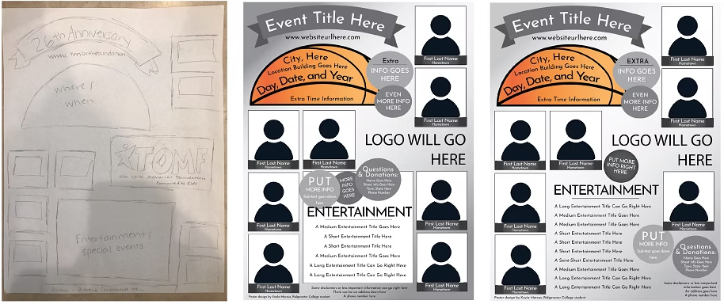
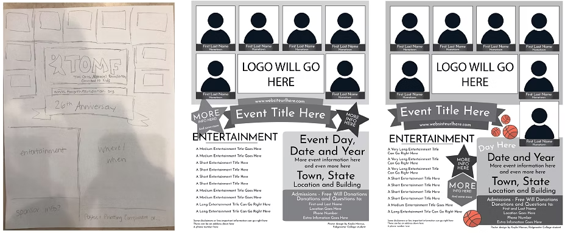
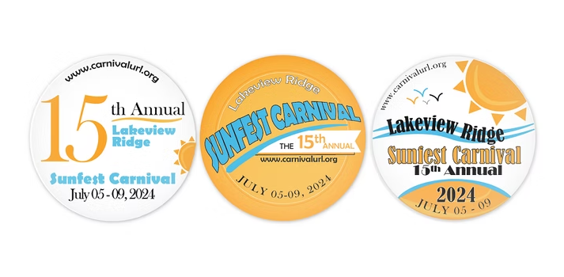
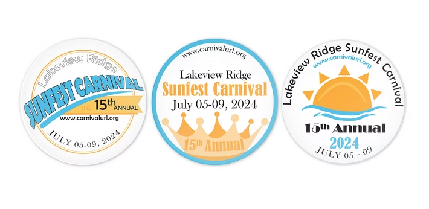

Tim Orth Memorial Foundation Posters.
Project: I had the opportunity to contribute to the Tim Orth Memorial Foundation's non-profit
"Jam the Gym" fundraiser
by designing four poster layouts for the event. The Tim Orth Memorial Foundation is a non-profit
all-volunteer organization located in Lake Lillian, Minnesota.
This volunteer-based organization has no administrative costs, meaning that all proceeds are used to help the
selected recipients with medical expenses. Some of the funds are raised through free will donations in their
annual "Jam the Gym" events in various towns across West Central Minnesota. In these events, volunteers organize
basketball games, performances, a raffle, silent auction, and concessions.
This pro bono project focused on effectively communicating important "Jam the Gym" event details - such as the
date, time, and location - while also highlighting the faces of 2024's young recipients. As part of a
collaborative team, I aimed to contribute to the Tim Orth Memorial Foundation by designing a series of poster
layouts as a promotional asset for the event.
Design Process.
I began the project with thorough research of effective charity poster designs. Using my research, I
brainstormed unique ideas that fit with the Tim Orth Memorial Foundation brand, experimenting with layouts to
accommodate the required event details and recipient photos.
Transitioning to Adobe Illustrator, I designed four distinct layouts, ensuring consistency with the
foundation's brand guidelines in typography, color scheme, and logo usage.
As the project progressed, the project manager relayed updated client preferences, requiring quick
adaptations to different estimates of recipient photos within the design. I incorporated this
requirement, adjusting the layouts while maintaining visual hierarchy and balance.
Despite my efforts for creating a strong design, my four final poster layouts were not selected by the
foundation. Reflecting on this experience, I'm proud of the collaborative spirit and dedication demonstrated
by our team. This project demonstrated the importance of resilience and flexibility in the design process.
Note: Recipient photos and brand mentions have been removed due to privacy and copyright concerns.


I had the opportunity to join a contest for creating button designs for the 81st Annual Hutchinson Jaycee Water
Carnival. The rules of the contest were to create a design of your choice using a maximum of three colors
and black and white; create the design so it could fit well on an approximate 2” x 2” button; and include
required
information about the event like title, date, and website URL.
Design Process.
I started my design process by researching the event. I viewed the website logo and learned that there were
many activities and entertainment provided during the event. Additionally, on their Facebook page, I learned
that they crown a Water Carnival Queen. I noted these features, planning to incorporate them in my designs.
Next, I researched past winners. I studied what colors they used, how they applied the three-color maximum
effectively, and what style they used in their designs.
Then, I went to Google and researched common button designs. I had never designed a button before, so I
needed some assistance with figuring out what layouts worked and what layouts to avoid. With this inspiration
in mind, I dove into creating some button designs on Adobe Illustrator.
I reflected the Water Carnival brand in my button designs. I utilized the same colors and similar
icons. I also tried to use a font that balanced formal with casual.
A few weeks after sending my designs to the event coordinator, I received word that they were not chosen as
one of the top three winning designs. While this was disappointing, I used the experience as a learning
opportunity.
The winning design was more casual than my own. It had its own unique style instead of reflecting the Water
Carnival brand. I stand by my work - I believe the buttons are well-designed and fit well with the event;
however, I also appreciate the time and effort the winner clearly put into their design.


Project Results.
Although my marketing material designs were not chosen for either event, these projects provided me with
valuable experience for creating event materials. I ensured that all event information was accurate, the
materials adhered to brand guidelines, and the layout followed a natural visual hierarchy so viewers can easily
understand the material's purpose. I'm proud of my designs, and I'm glad I was able to contribute to these pro
bono causes, growing my graphic design skills along the way.